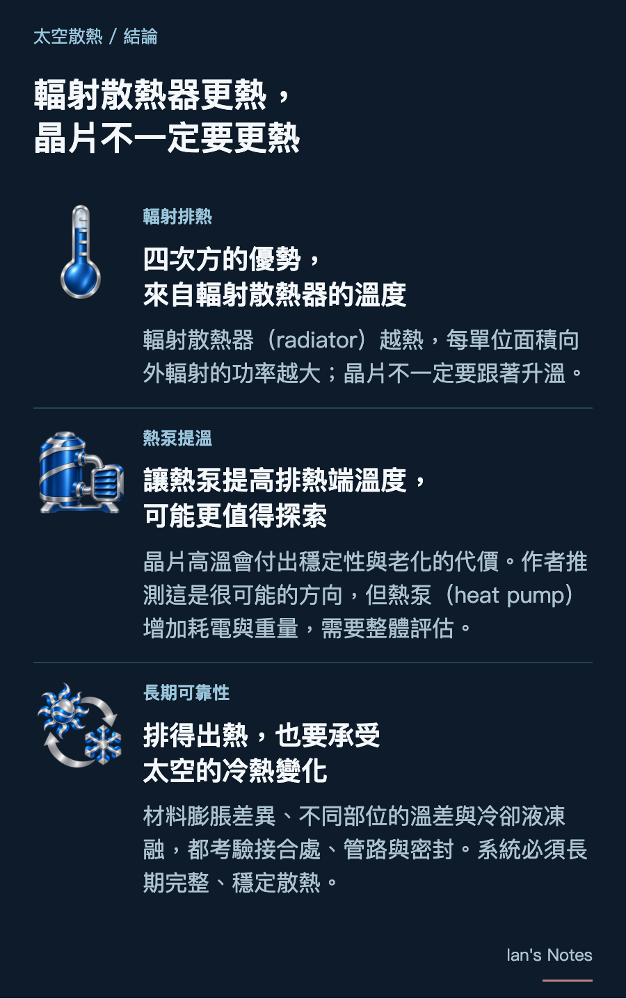

Elon Musk 在訪談中提到，把以絕對溫度 K 計算的工作溫度提高 20%，輻射散熱器（radiator）重量大約可以減半。讓輻射散熱器更熱，確實有利於輻射排熱；但晶片非得跟著一起升溫嗎？這要把輻射散熱器的物理優勢，和晶片內部電路的限制分開來看。

在地面，伺服器可以用空氣或冷卻液把熱帶走，再由機房的排熱設備將熱排到室外，例如利用空氣對流，或冷卻塔中的水蒸發。只要晶片仍能被充分冷卻，提高冷卻液的容許溫度，也有機會減少冰水機(chiller)的使用。
太空外部是真空，沒有周圍空氣幫忙帶走熱量。雖然也能採用消耗水的相變散熱，例如太空衣的昇華器，但需要持續補充水。因此，長期運作的太空資料中心，主要仍須靠輻射散熱器，以熱輻射把熱排向外界。
溫度提高 20%，為什麼面積能接近減半？
依據史蒂芬–波茲曼定律（灰體輻射），輻射散熱器向外輻射的功率為：
Pₑₘᵢₜ = ε σ A Tᵣₐ𝒹⁴
A 是散熱面積，ε 是表面放射率，σ 是史蒂芬–波茲曼常數，Tᵣₐ𝒹 則是以絕對溫度 K 計算的輻射散熱器溫度。實際淨排熱能力，仍會受到吸收的太陽、地球及其他外部熱量影響。
面積有線性的幫助，溫度則有四次方的效果。輻射散熱器的絕對溫度若提高 20%，每單位面積向外輻射的功率便增加到：
1.2⁴ ≈ 2.07 倍
在放射率不變、吸收的外部熱量可忽略的簡化條件下，排出相同熱量所需的面積，就能降至原本的約 48%。這裡必須以絕對溫度 K 計算，例如從 300 K 提高到 360 K，相當於從約 27°C 提高到 87°C。
Musk 的說法有物理依據。但從面積約減半走到重量約減半，還需要假設輻射散熱器每單位面積的重量相近；管路、支撐與部署機構，也未必會同比例縮小。
Musk 談的是把晶片設計成能在更高溫下運作；但四次方關係中的溫度，指的是輻射散熱器。晶片較熱，還必須能讓輻射散熱器提高工作溫度，才有機會換取減重。另一種做法，則是利用熱泵把兩端溫度分開。


晶片更熱，電路要付出什麼代價？
晶片能在多高的溫度下長期運作，可以參考產品的驗證條件。以 Nvidia H100 PCIe 的原廠文件為例，熱驗證條件列為 GPU 內部感測器平均 87°C、HBM 最高感測器 95°C。
溫度提高，可能增加漏電與功耗，並改變電晶體的電氣特性，影響邏輯電路的時序裕度。高溫可能拉長晶片內 SRAM 快取的讀取時間，限制可用的運作速度。
長期而言，高溫與電壓壓力可能加速老化。偏壓溫度不穩定性 (BTI) 會使電晶體特性逐漸漂移；電遷移則可能讓金屬導線形成空洞或堆積，最後造成連線失效。
讓輻射散熱器更熱，不一定要讓晶片一起升溫
熱泵 (heat pump) 提供另一條路：消耗外部能量，把晶片端的熱搬到溫度更高的輻射散熱器。以壓縮式熱泵為例，冷媒先蒸發吸熱，再由壓縮機做功升壓、升溫，最後在高溫端凝結，把熱交給輻射散熱器。冷媒在封閉管路內循環，輻射散熱器再向外輻射排熱。
這不是全新的太空構想。1993 年，NASA 資助的月球基地研究，就分析了以熱泵把低溫廢熱送到較高溫輻射散熱器的方案。ESA 在 2016 年完成熱泵概念研究，並於 2017 年公布高速壓縮機原型的測試成果。熱泵因此是太空熱控長期研究的技術路線之一。
近期，Starcloud 於 2025 年提出、2026 年公開的軌道資料中心專利申請，也把熱泵列為提高輻射散熱器溫度、縮小散熱面積的可選方案。目前我尚未查到 SpaceX、Nvidia 或 Google 公開採用這類太空熱泵方案的直接資料；但從上述原理與研究來看，我推測熱泵也很可能是這些大型公司正在研究的方向，這仍有待公開資料證實。
如此一來，晶片不必跟著輻射散熱器一起升溫，有機會減輕額外的電路與老化壓力。但輻射散熱器也必須排掉熱泵消耗的能量。假設晶片產生 100 W 的熱，熱泵另外耗電 30 W，輻射散熱器就要排出約 130 W；這裡的數字只是示意，不是特定設備的效率。
這樣一來，輻射散熱器 (radiator) 的單位面積輻射排熱能力雖然增加了，但熱泵需要額外能量，也增加設備重量。因此，整體系統是否更省能、排熱是否更有效，仍須把耗電、重量與可靠度一起評估。

太空溫差極大，考驗散熱系統
太空設備可能反覆進出日照與地球陰影。以國際太空站為例，外部日照與黑暗條件的溫度可分別達到約＋121°C 與 −157°C。再加上晶片運算負載改變所帶來的發熱變化，設備的冷熱差異可能進一步加大。溫控系統必須緩和這些變化，避免外部的極端冷熱直接成為晶片承受的溫度。
問題在於，連在一起的材料，受熱後不一定膨脹得一樣多。金屬、晶片、焊接材料與密封件，各有不同的膨脹幅度。當它們固定在一起，一邊想多伸長一點，另一邊卻只伸長一點，接合處就會受到拉扯；降溫時，又再收縮回去。一次可能沒事，但反覆發生，便可能累積疲勞、形成裂紋。JPL 對太空電子封裝的研究，就把這種差異膨脹造成的疲勞，列為焊點失效的重要原因。
而且，不一定要整件設備一起變熱、變冷，才會產生應力。同一時間，一端很熱、另一端很冷，也會讓不同部位產生不同程度的變形。太空真空中沒有周圍空氣協助均溫，發熱的電子板與朝向深空的冷端，可能維持較大的溫度差，造成熱變形與應力。
這種反覆拉扯，也可能放大原本就存在的弱點。國際太空站的一次冷卻液洩漏調查，就把問題鎖定在快速接頭的密封處：密封缺陷與下方鍍層剝離，被列為最可能原因，而在軌熱循環進一步加劇了剝離。因此，散熱系統除了當下不能漏，還要確認接頭與密封在長期冷熱變化後，仍能維持完整。
如果溫度進一步降到冷卻液的凝固點以下，還會多一個凍融問題。對銅水熱管而言，水結冰膨脹，可能損壞管壁或內部毛細結構。
但結冰不代表一定會壞，關鍵是結構能否承受凍融。
提高輻射散熱器溫度，可以增加向外輻射的功率；但系統仍須承受運作、停機與環境變化。無論採用高溫晶片或熱泵，都要把輻射散熱器減重與整套系統的耗電、壽命及接合密封可靠性一起衡量。
結論
輻射散熱器的溫度越高，每單位面積向外輻射的功率就越大，這是史蒂芬–波茲曼定律中四次方關係帶來的優勢。但要取得這個優勢，必須提高的是輻射散熱器的溫度，晶片不一定要跟著升溫。
晶片高溫運作會帶來電路穩定性與老化的代價。因此，我推測，利用熱泵把晶片端的熱搬到更高溫的輻射散熱器，可能比讓晶片在極高溫下運作更值得探索。不過，熱泵需要額外能量，也增加設備重量，需要整體評估。
此外，太空環境的冷熱變化，也考驗散熱系統的長期可靠性。材料膨脹程度不同、不同部位的溫差，以及冷卻液凍融，都可能讓接合處、管路與密封承受應力。能把熱排出去只是第一步；長期運作後，整套系統仍能保持完整、穩定散熱，才是實際可用的設計。

附錄｜致謝
感謝許多朋友提供補充與回饋，特別是 Kevin Cameron、莊子宏提出熱泵的想法，以及 Thomas David 提醒高溫對 SRAM 等晶片內部電路的影響。這些交流讓我進一步思考，也促成本文的補充。
Many thanks to everyone who shared their insights and feedback, especially Kevin Cameron and 莊子宏 for suggesting heat pumps, and Thomas David for highlighting the effects of high temperatures on SRAM and other on-chip circuitry. These discussions prompted further reflection and helped shape the additions to this article.